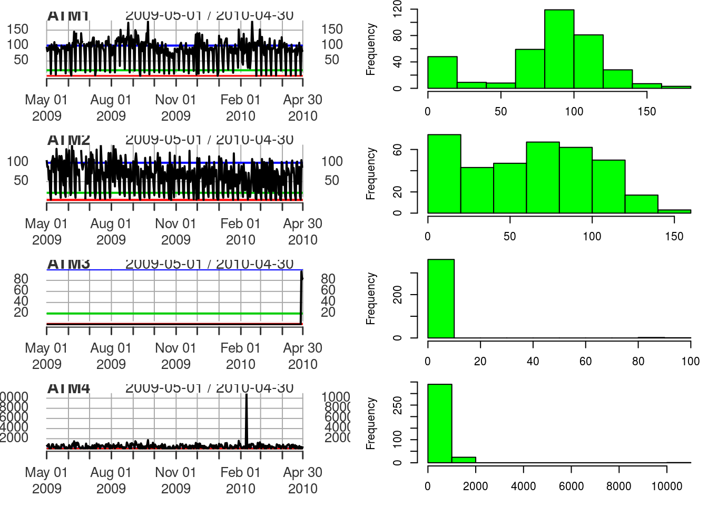
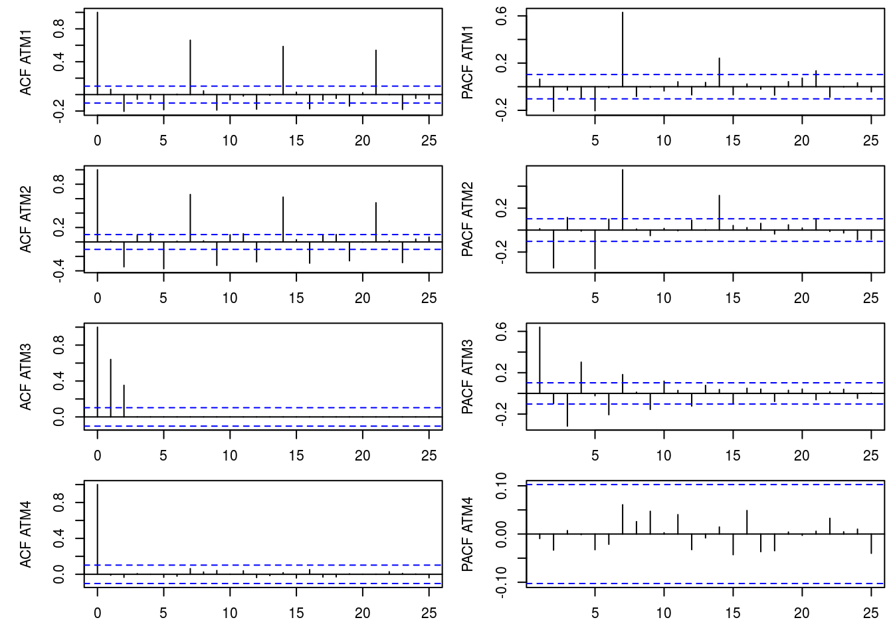
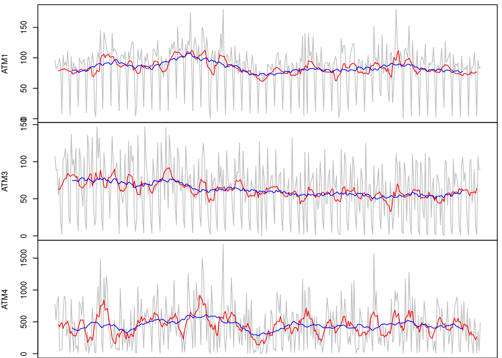
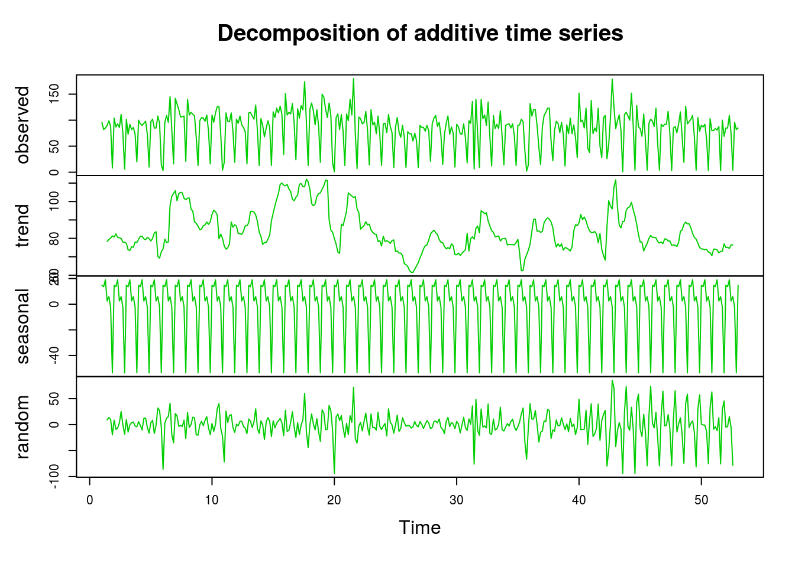
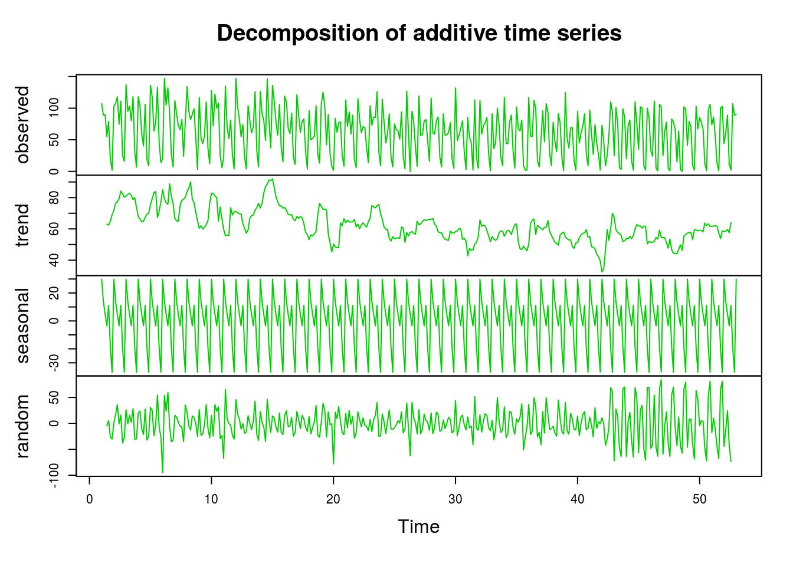
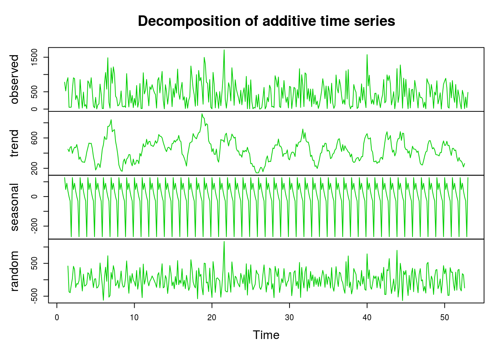
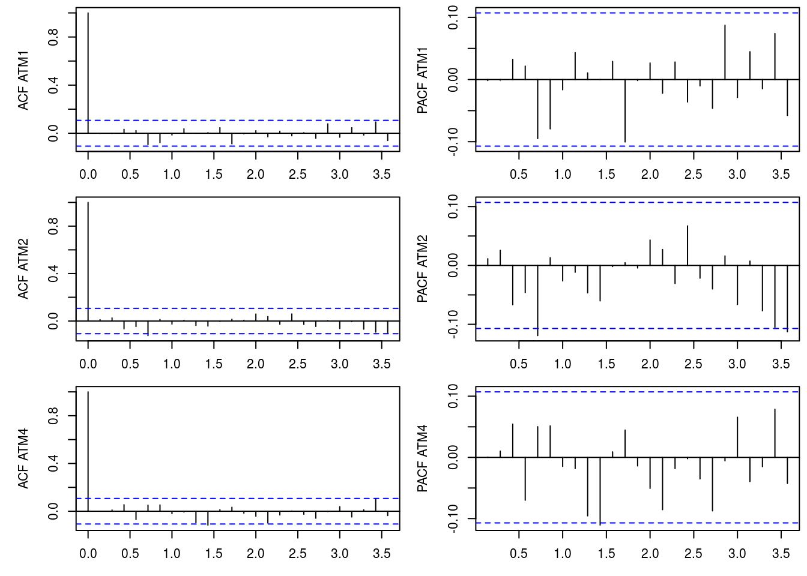
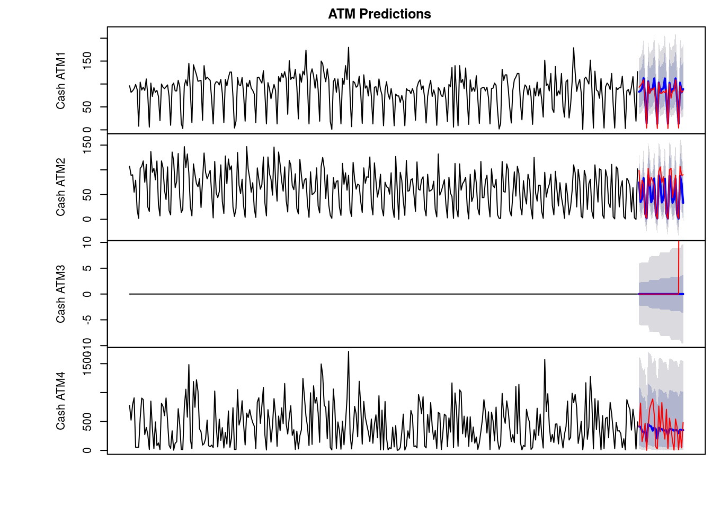

Preamble:
This document focuses on the time series analysis. The variable ‘Cash’ is provided in hundreds of dollars.
This is a time series spanning daily transactions from May 1, 2009 to April 30, 2010 from four ATMs.
Research question:
- forecast how much cash is taken out of 4 different ATM machines for May 2010
Structure of analysis:
- Exploratory Data Analysis
- Visualizations
- ACF and PACF
- Clean The Data
- Trend Preview
- Data Decomposition Plot
- Stationarity Test
- Model Data
- Transformation
- ARIMA Model
- Evaluation
- Box-Ljung Test
- Forecasting
- Model Accuracy
sourceURL <- "https://raw.githubusercontent.com/jzuniga123"
file <- "/SPS/master/DATA%20624/ATM624Data.xlsx"
download.file(paste0(sourceURL, file), "temp.xlsx", mode="wb")
atm <- xlsx::read.xlsx("temp.xlsx", sheetIndex=1, header=T)
invisible(file.remove("temp.xlsx"))Exploratory Data Analysis
# preview first 5 rows
head(atm) DATE ATM Cash
1 2009-05-01 ATM1 96
2 2009-05-01 ATM2 107
3 2009-05-02 ATM1 82
4 2009-05-02 ATM2 89
5 2009-05-03 ATM1 85
6 2009-05-03 ATM2 90class(atm)[1] "data.frame"str(atm)'data.frame': 1474 obs. of 3 variables:
$ DATE: Date, format: "2009-05-01" "2009-05-01" ...
$ ATM : Factor w/ 4 levels "ATM1","ATM2",..: 1 2 1 2 1 2 1 2 1 2 ...
$ Cash: num 96 107 82 89 85 90 90 55 99 79 ...# preview descriptive statistics on quantitative and qualitative variables
summary(atm) DATE ATM Cash
Min. :2009-05-01 ATM1:365 Min. : 0.0
1st Qu.:2009-08-01 ATM2:365 1st Qu.: 0.5
Median :2009-11-01 ATM3:365 Median : 73.0
Mean :2009-10-31 ATM4:365 Mean : 155.6
3rd Qu.:2010-02-01 NA's: 14 3rd Qu.: 114.0
Max. :2010-05-14 Max. :10919.8
NA's :19 Skewed distribution since the mean is higher than the third quartile.
# preview periods between dates in the time series
xts::periodicity(unique(atm$DATE))Daily periodicity from 2009-05-01 to 2010-05-14 Dataframe spans daily transactions from May 1, 2009 to May 14, 2010.
# preview observations that have no missing values
atm[!complete.cases(atm), ] DATE ATM Cash
87 2009-06-13 ATM1 NA
93 2009-06-16 ATM1 NA
98 2009-06-18 ATM2 NA
105 2009-06-22 ATM1 NA
110 2009-06-24 ATM2 NA
731 2010-05-01 <NA> NA
732 2010-05-02 <NA> NA
733 2010-05-03 <NA> NA
734 2010-05-04 <NA> NA
735 2010-05-05 <NA> NA
736 2010-05-06 <NA> NA
737 2010-05-07 <NA> NA
738 2010-05-08 <NA> NA
739 2010-05-09 <NA> NA
740 2010-05-10 <NA> NA
741 2010-05-11 <NA> NA
742 2010-05-12 <NA> NA
743 2010-05-13 <NA> NA
744 2010-05-14 <NA> NAATM transactions have missing values.
summary(factor(atm$ATM)[!is.na(atm$Cash) & atm$Cash %% 1 != 0])ATM1 ATM2 ATM3 ATM4
0 0 0 365 There are non-integer transactions at ATM 4 implying that these data are likely debit card purchase transactions.
Visualizations
# time plot represents a line graph that plots each observed value against the time of the observation, with a single line connecting each observation across the entire period
par(mfrow=c(4, 2), mar = c(3, 5, 0, 0), oma = c(0, 0, 0.5, 0.5))
for(i in 1:length(levels(atm$ATM))) {
atm_sub <- subset(atm, ATM == paste0("ATM", i))
atm_ts <- xts::xts(atm_sub$Cash, order.by=atm_sub$DATE)
n <- nrow(atm_ts); l <- rep(1, n); m <- rep(20, n); h <- rep(100, n)
print(plot(cbind(atm_ts, l, m,h), main=paste0("ATM", i)))
# histogram displays the frequency at which values in a vector occur.
hist(atm_ts, col="green", xlab="", main="")
}
Observations:
- Time Plots and Histograms for ATM1 and ATM2 are unremarkable.
- Time Plot and Histogram of ATM3 shows the data consists mostly of zero values with a handful of transactions occurring at the end of the series.
- ATM3 will not be modeled due to these degenerative properties.
- Time Plot and Histogram of ATM4 shows an extreme outlier around the three-quarter mark of the series. The horizontal lines in the Time Plots delineate $1, $20, and $100 in red, green, and blue; respectively.
ACF and PACF
ACF plot shows the autocorrelations between each observation and its immediate predecessor (lagged observation). The PACF plot shows the autocorrelations between the current observation and each individual lagged observation The xts::xts()function converts data to a time series object which displays better in visualizations than time series objects created using other packages.
par(mfrow=c(4, 2), mar = c(3, 5, 0, 0), oma = c(0, 0, 0.5, 0.5))
for(i in 1:length(levels(atm$ATM))) {
atm_sub <- subset(atm, ATM == paste0("ATM", i))
atm_ts <- xts::xts(atm_sub$Cash, order.by=atm_sub$DATE)
acf(na.omit(atm_ts), ylab=paste0("ACF ATM", i), main="")
pacf(na.omit(atm_ts), ylab=paste0("PACF ATM", i), main="")
}
Observations:
- ACF and PACF plots for ATM1, ATM2, and ATM3 show autocorrelation between each observation and its immediate predecessor and autocorrelation between the current observation and other individual lagged observations. The ACF and PACF plots for ATM3 however, are not reliable due to the death of observations.
Clean The Data
Data are cleaned using forecast::tsclean() and then converted to a time series object using the ts() function. The tsclean() function imputes nulls and removes outliers. The ts()function converts data to a time series object which is compatible with the forecast package.
for(i in 1:length(levels(atm$ATM))) {
atm_num <- paste0("ATM", i)
atm_sub <- subset(atm, ATM == atm_num, select=-2)
atm_sub$Cash <- forecast::tsclean(atm_sub$Cash, replace.missing=T)
assign(atm_num, ts(atm_sub$Cash, frequency = 7, start=start(atm_sub$DATE)))
}Trend Examine
A moving average smoother is helpful in examining what kind of trend is involved in a series. Moving average models should not be confused with moving average smoothing. A moving average model is used for forecasting future values while moving average smoothing is used for estimating the trend-cycle component of past values. The ma() function computes a simple moving average smoother of a given time series.
par(mfrow=c(3, 1), mar = c(0, 4, 0, 0), oma = c(0, 0, 0.5, 0.5))
plot(ATM1, col=8, xaxt = "n", ylab="ATM1")
lines(forecast::ma(ATM1, order=7), col=2) # weekly
lines(forecast::ma(ATM1, order=30), col=4) # monthly
plot(ATM2, col=8, xaxt = "n", ylab="ATM3")
lines(forecast::ma(ATM2, order=7), col=2) # weekly
lines(forecast::ma(ATM2, order=30), col=4) # monthly
plot(ATM4, col=8, xaxt = "n", ylab="ATM4")
lines(forecast::ma(ATM4, order=7), col=2) # weekly
lines(forecast::ma(ATM4, order=30), col=4) # monthly
Observations:
- The 7-day (weekly) and 30-day (monthly) moving average smoother line shows that the data for the ATMs have no apparent trend.
Data Decomposition Plot
Decomposition Plot decomposes and plots the observed values, the underlying trend, seasonality, and randomness of the time series data.
plot(decompose(ATM1), col=3)
plot(decompose(ATM2), col=3)
plot(decompose(ATM4), col=3)
Observations:
- Plotting the trend-cycle and seasonal indices computed by additive decomposition shows that the data have no apparent trend, seasonal fluctuations, and fairly random residuals.
Stationarity Test
Dickey-Fuller Test
An augmented Dickey-Fuller unit root test evaluates if the data exhibit a Stationarity process with deterministic trend or a Stationarity process with stochastic trend.
tseries::adf.test(ATM1)Warning in tseries::adf.test(ATM1): p-value smaller than printed p-value
Augmented Dickey-Fuller Test
data: ATM1
Dickey-Fuller = -4.5329, Lag order = 7, p-value = 0.01
alternative hypothesis: stationarytseries::adf.test(ATM2)Warning in tseries::adf.test(ATM2): p-value smaller than printed p-value
Augmented Dickey-Fuller Test
data: ATM2
Dickey-Fuller = -6.046, Lag order = 7, p-value = 0.01
alternative hypothesis: stationarytseries::adf.test(ATM4)Warning in tseries::adf.test(ATM4): p-value smaller than printed p-value
Augmented Dickey-Fuller Test
data: ATM4
Dickey-Fuller = -5.6304, Lag order = 7, p-value = 0.01
alternative hypothesis: stationaryThe augmented Dickey-Fuller unit root test p-values are below α=0.05. Therefore, the null hypothesis that the data has unit roots is rejected. The data exhibit stochastic trend which suggests using regression (AR) in lieu of differencing. Autoregressive (AR) modeling acts like partial differencing when ϕ<1. When ϕ=1 the AR(1) model is like a first-order difference.
Model Data
The train and test sets are created by referencing rows by index.
# train/test split
index_train <- 1:(length(ATM1) - 30)
ATM1_train <- ts(ATM1[index_train], frequency=7)
ATM1_test <- ts(ATM1[-index_train], frequency=7)
index_train <- 1:(length(ATM2) - 30)
ATM2_train <- ts(ATM2[index_train], frequency=7)
ATM2_test <- ts(ATM2[-index_train], frequency=7)
index_train <- 1:(length(ATM3) - 30)
ATM3_train <- ts(ATM3[index_train], frequency=7)
ATM3_test <- ts(ATM3[-index_train], frequency=7)
index_train <- 1:(length(ATM4) - 30)
ATM4_train <- ts(ATM4[index_train], frequency=7)
ATM4_test <- ts(ATM4[-index_train], frequency=7)The indexed rows for the test set are a window at the end of the times series. The window sized for the testing set is that of the desired prediction. The training set window is comprised of the indexes which are the complement of the test set indexes.
Transformation
The Augmented Dickey-Fuller Test results support not differencing. Data can be seasonally adjusted for modeling and then reseasonalized for predictions. The modeling algorithm being used evaluates seasonal components and produces predictions that reflect the seasonality in the underlying data. Therefore, the data need not be seasonally adjusted.Heteroskedasticity refers to the circumstance in which the variability of a variable is unequal across the range of values of a second variable. Box-Cox transformations can help to stabilize the variance of a time series.
(lambda1 <- forecast::BoxCox.lambda(ATM1_train))[1] 0.4355901(lambda2 <- forecast::BoxCox.lambda(ATM2_train))[1] 0.7156895(lambda4 <- forecast::BoxCox.lambda(ATM4_train))[1] 0.3945256The Box-Cox transformation parameters suggested are around λ=0.5. This rounded (more interpretable) value is suggestive of a 1/yt‾‾√ transformation. These Box-Cox transformations stabilize the variance and make each series relatively homoskedastic with equal variance.
ARIMA Model
The auto.arima() function chooses an ARIMA model automatically. It uses a variation of the Hyndman and Khandakar algorithm which combines unit root tests, minimization of the AICc, and MLE to obtain an ARIMA model. The function takes some short-cuts in order to speed up the computation and will not always yield the best model. Setting stepwise and approximation to FALSE prevents the function from taking short-cuts.
(fit1 <- forecast::auto.arima(ATM1_train, stepwise=F, approximation=F, d=0, lambda=lambda1))Series: ATM1_train
ARIMA(0,0,2)(1,1,1)[7]
Box Cox transformation: lambda= 0.4355901
Coefficients:
ma1 ma2 sar1 sma1
0.1449 -0.1116 0.1320 -0.7243
s.e. 0.0547 0.0537 0.0893 0.0669
sigma^2 estimated as 6.441: log likelihood=-770.86
AIC=1551.73 AICc=1551.92 BIC=1570.69(fit2 <- forecast::auto.arima(ATM2_train, stepwise=F, approximation=F, d=0, lambda=lambda2))Series: ATM2_train
ARIMA(2,0,2)(0,1,1)[7] with drift
Box Cox transformation: lambda= 0.7156895
Coefficients:
ar1 ar2 ma1 ma2 sma1 drift
-0.4282 -0.9254 0.4761 0.8044 -0.7672 -0.0246
s.e. 0.0464 0.0413 0.0764 0.0555 0.0483 0.0155
sigma^2 estimated as 66.34: log likelihood=-1152.83
AIC=2319.66 AICc=2320.01 BIC=2346.21(fit4 <- forecast::auto.arima(ATM4_train, stepwise=F, approximation=F, d=0, lambda=lambda4))Series: ATM4_train
ARIMA(1,0,0)(2,0,0)[7] with non-zero mean
Box Cox transformation: lambda= 0.3945256
Coefficients:
ar1 sar1 sar2 mean
0.0814 0.2060 0.1911 22.7977
s.e. 0.0548 0.0537 0.0547 0.9477
sigma^2 estimated as 97.25: log likelihood=-1240.53
AIC=2491.06 AICc=2491.24 BIC=2510.13Evaluate
ACF and PACF
ACF plot shows the autocorrelations between each observation and its immediate predecessor (lagged observation). The PACF plot shows the autocorrelations between the current observation and each individual lagged observation.
par(mfrow=c(3, 2), mar = c(3, 5, 0, 0), oma = c(0, 0, 0.5, 0.5))
acf(residuals(fit1), ylab="ACF ATM1"); pacf(residuals(fit1), ylab="PACF ATM1")
acf(residuals(fit2), ylab="ACF ATM2"); pacf(residuals(fit2), ylab="PACF ATM2")
acf(residuals(fit4), ylab="ACF ATM4"); pacf(residuals(fit4), ylab="PACF ATM4")
Observations:
- The residuals of the models appear to display the characteristics of White Noise in the ACF and PACF plots with only one of the twenty residuals (or 0.05%) being significant. At a 95% confidence interval this is within probabilistic expectations.
Box-Ljung Test
The Box-Ljung test is helpful in assessing if data follow a White Noise pattern. The arma attribute of the fitted model returns a vector containing the ARIMA model parameters p,q,P,Q,period,d,and D; in that order.
Box.test(residuals(fit1), lag=7, fitdf=sum(fit1$arma[1:2]), type="Ljung-Box")
Box-Ljung test
data: residuals(fit1)
X-squared = 5.7195, df = 5, p-value = 0.3345Box.test(residuals(fit2), lag=7, fitdf=sum(fit1$arma[1:2]), type="Ljung-Box")
Box-Ljung test
data: residuals(fit2)
X-squared = 7.9286, df = 5, p-value = 0.1602Box.test(residuals(fit4), lag=7, fitdf=sum(fit1$arma[1:2]), type="Ljung-Box")
Box-Ljung test
data: residuals(fit4)
X-squared = 4.6833, df = 5, p-value = 0.4557The null hypothesis of independence is not rejected. The Box-Ljung shows that the autocorrelations of the residuals from the models are not significantly different from zero at α=0.05. The residuals of the models display the characteristics of White Noise. The models pass the required checks and are therefore suitable for forecasting.
Forecasting
ATM3 was not modeled due to its degenerative properties. To forecast values for ATM3, the model for an ATM with a similar mean will be used.
c(mean(ATM1), mean(ATM2), mean(ATM3[ATM3!=0]), mean(ATM4))[1] 84.15479 62.59178 87.66667 444.75681The mean of ATM1 is very close to the mean of the few values in ATM3. Therefore, the ARIMA(0,0,1)(2,0,0)7 ARIMA model for ATM1 will be used to make predictions for ATM3.
fit3 <- forecast::Arima(ATM3_train, model=fit1)Forecasts are done using the forecast::forecast() function. Since the data were not seasonally adjusted, they need not be reseasonalized prior to forecast. Prediction point estimates are represented by a blue line, prediction intervals are represented by blue bands, and actual values are represented by a red line.
fcast1 <- forecast::forecast(fit1, h=30)
fcast2 <- forecast::forecast(fit2, h=30)
fcast3 <- forecast::forecast(fit3, h=30)
fcast4 <- forecast::forecast(fit4, h=30)
par(mfrow=c(4, 1), mar = c(0, 4, 0, 0), oma = c(4, 4, 2, 0.5))
plot(fcast1, ylab="Cash ATM1", main="", xaxt="n");
lines(lag(ATM1_test, -length(ATM1_train)), col="red")
plot(fcast2, ylab="Cash ATM2", main="", xaxt="n");
lines(lag(ATM2_test, -length(ATM2_train)), col="red")
plot(fcast3, ylab="Cash ATM3", main="", xaxt="n")
lines(lag(ATM3_test, -length(ATM3_train)), col="red")
plot(fcast4, ylab="Cash ATM4", main="", xaxt="n")
lines(lag(ATM4_test, -length(ATM4_train)), col="red")
title("ATM Predictions", outer=TRUE)
Observations:
- The predictions appear to produce a useful forecasts that reflect patterns in the original data.
Model Accuracy
The accuracy() function is helpful for obtaining summary measures of the forecast accuracy: Mean Error (ME), Root Mean Squared Error (RMSE), Mean Absolute Error (MAE), Mean Percentage Error (MPE), Mean Absolute Percentage Error (MAPE), Mean Absolute Scaled Error (MASE), and Autocorrelation of errors at lag 1 (ACF1).
round(forecast::accuracy(fcast1, length(ATM1_test)), 3) ME RMSE MAE MPE MAPE MASE ACF1
Training set 2.038 25.007 16.039 -96.186 114.754 0.427 0.011
Test set -53.187 53.187 53.187 -177.290 177.290 1.416 NAround(forecast::accuracy(fcast2, length(ATM2_test)), 3) ME RMSE MAE MPE MAPE MASE ACF1
Training set 1.456 24.795 17.275 -Inf Inf 0.40 -0.013
Test set -44.485 44.485 44.485 -148.284 148.284 1.03 NAround(forecast::accuracy(fcast4, length(ATM4_test)), 3) ME RMSE MAE MPE MAPE MASE ACF1
Training set 96.204 360.567 280.446 -342.343 388.847 0.72 0.017
Test set -385.878 385.878 385.878 -1286.261 1286.261 0.99 NAThese accuracy for the predications vary. ATM1 and ATM2 predictions are more accurate than ATM4 predictions. The closer the original data are to being White Noise, the less accurate the predictions.
)